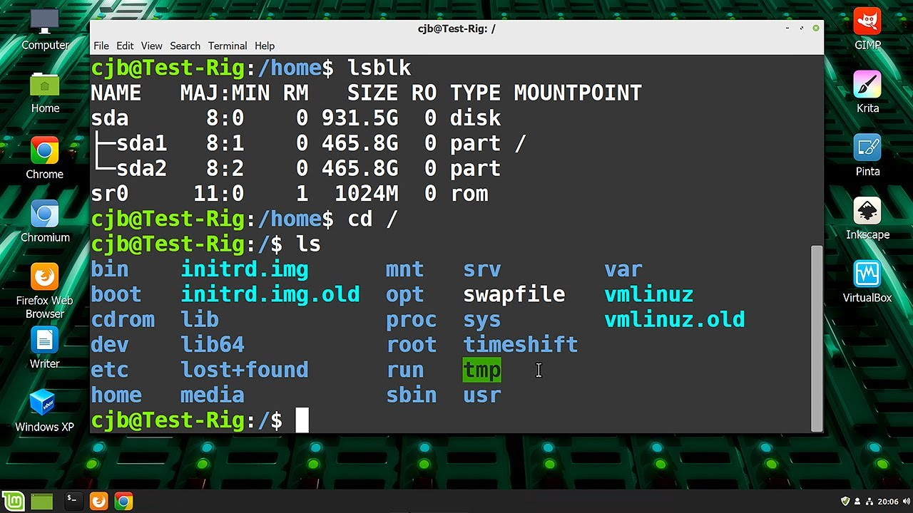
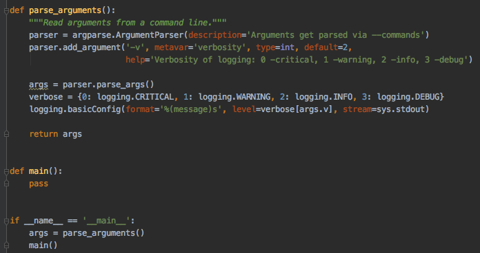
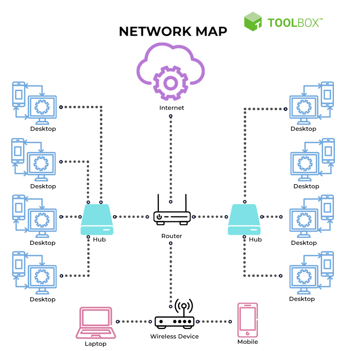

Welcome to My Cybersecurity Journey
My name is Regina Maldonado Gutierrez. I’m currently a junior at Illinois Tech, majoring in Applied Cybersecurity. This page shares my passion for digital defense, hands-on learning, and future career goals. Through labs, projects, and real-world scenarios, I’ve developed a strong foundation in system administration, network security, and ethical hacking.
Why Cybersecurity?
Cybersecurity is the backbone of modern infrastructure. Every organization, from hospitals to banks, depends on secure systems to protect sensitive data and ensure operational continuity. I’m drawn to this field because it combines technical problem-solving with ethical responsibility. I enjoy identifying vulnerabilities, analyzing threats, and building defenses that make systems resilient and trustworthy.
My coursework has introduced me to risk management frameworks, compliance standards like NIST and ISO, and the importance of digital forensics. I believe cybersecurity is not just about technology, it’s about protecting people, privacy, and trust in the digital age.
My Favorite Tools
- Linux: I use Linux extensively for permissions, file system management, and scripting. It’s my go-to environment for troubleshooting and testing security configurations.
- Python: I’ve built automation scripts for log analysis, password validation, and basic intrusion detection. Python helps me streamline repetitive tasks and explore data efficiently.
- Wireshark: This tool allows me to capture and analyze network traffic. I’ve used it to identify suspicious packets, understand protocols, and simulate attack scenarios.
- Nmap: I use Nmap for network scanning and host discovery. It’s essential for mapping out system vulnerabilities and understanding attack surfaces.
- Virtual Machines: I run Kali Linux and other distros in isolated environments to practice ethical hacking and simulate real-world threats safely.
Media
  Cybersecurity Overview
This video highlights key cybersecurity concepts I’m passionate about.